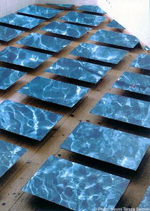

|

"Walking on water", 1999 Walking on Water Is a space affecting project, translating an idea into a visual possibility. Gazing at the lake, thinking if He walked on these waters, and that if he did, how. Thinking it’s the same water, but it is also another water. Same surface, but different substance. The minute the thought was being thought, the eyes were glancing, the photo was taken, is what one can see here, frozen. Importing the outside into the inside. Keeping the idea of floating, making a grid out of a glance. Fitting it into a given room. The moment, the thought, the gaze, all united. A confiend space with water. The photo is the surface of the water. Walk on it. Conceptualized for Israel Museum for the exhibition Jesus in the Photography, 2000. Close Window All content copyright 2006 Naomi Tereza Salmon - all rights reserved |